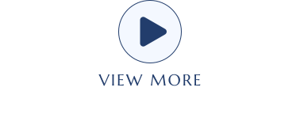

最新技術と例
最新技術
ダイナミックプロジェクションマッピング
カメラで深度を読み取る技術により、深度マップを作成し、毎秒約500回の更新が可能である。 これにより、1枚ごとのわずかなズレをカメラが捉え、より正確な深度を認識することができる。この技術は、動きや変化に瞬時に対応できるという大きな利点がある。
利用例
1. ダンスの動きに映像を瞬時に合わせる
ダンサーの動きにリアルタイムで映像を投影することで、パフォーマンスをさらに魅力的に演出する技術である。
2. 質感を変える技術
高速で映像を映すことで、硬い物体に柔らかさを加えるなど、質感を変えることが可能である。
その他の最新の利用例
1. 建設現場でのペン入れ
建設現場では、従来のチョークやペンでの作業に代わり、プロジェクションマッピングを活用することで効率的に進行が可能となる。
2. 採掘現場での色分け表示
掘削現場では、深さや掘削箇所に応じてプロジェクションマッピングで色分けを行い、作業効率を向上させている。 これにより、事故やミスを減らし、安全性を高めることができる。
3. 高速プロジェクションマッピングの色補正技術
高速プロジェクションマッピングでは、色補正技術を活用することで、投影対象の色や材質に応じた最適な映像を投影できる。 この技術により、対象物の形状や色にリアルタイムで対応し、非常に正確な色合いや輝度を実現している。 特に化粧品業界での応用が進んでおり、ユーザーの肌に合わせてファンデーションやリップカラーをリアルタイムでシミュレーション可能である。 これにより、物理的な試用を行うことなく、自然な仕上がりを確認でき、効率的で清潔な体験を提供する。
参考文献
REFERENCES
